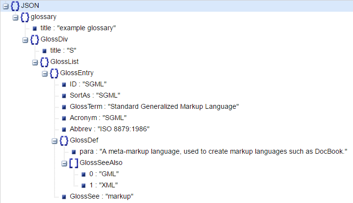

Python: How to work with Json
TweetOne of the most used format these days (especially online) is the Javascript Object Notation (JSON). At first sight it can be a little confusing, but after using it a few times it won't be a problem anymore.
So what's the best way to read Json in Python? Luckily for you (and me) there is an awesome library integrated within Python named "json".
Let's start with a Json available on http://json.org/example.html:
{ "glossary": { "title": "example glossary", "GlossDiv": { "title": "S", "GlossList": { "GlossEntry": { "ID": "SGML", "SortAs": "SGML", "GlossTerm": "Standard Generalized Markup Language", "Acronym": "SGML", "Abbrev": "ISO 8879:1986", "GlossDef": { "para": "A meta-markup language, used to create markup languages such as DocBook.", "GlossSeeAlso": ["GML", "XML"] }, "GlossSee": "markup" } } } } }There are a few tools that help you format and read Json, these are the ones i use often:
- http://jsonviewer.stack.hu: This is a really awesome site which helps you understand the content of the Json
- atom.io: An awesome text editor that supports a lot of extension. I really suggest you to take a look at it

Now, what are the first steps to import this data structure into our python script?
import jsonThe first step is to import the library we are going to use: "json". Then we create a string which contains the Json we are going to read. Now that we have our Json we load it into a variable by using json.loads() and print the result:json_string = """ { "glossary": { "title": "example glossary", "GlossDiv": { "title": "S", "GlossList": { "GlossEntry": { "ID": "SGML", "SortAs": "SGML", "GlossTerm": "Standard Generalized Markup Language", "Acronym": "SGML", "Abbrev": "ISO 8879:1986", "GlossDef": { "para": "A meta-markup language, used to create markup languages such as DocBook.", "GlossSeeAlso": ["GML", "XML"] }, "GlossSee": "markup" } } } } } """
my_json = json.loads(json_string) print(my_json)

We can see that the Json we loaded is outputted as a python Dict, which is convenient for us. To navigate it you just need to use the syntax you'll use with a Dict:
print(my_json['glossary']['title']) # returns: example glossary print(my_json['glossary']['GlossDiv']) # returns: a dictThat's pretty awesome right? But what if i need to output the json as is? There is a simple method in the json library named dumps() that does just what we need:
print(json.dumps(my_json)) >>{"glossary": {"title": "example glossary", "GlossDiv": {"title": "S", "GlossList": {"GlossEntry": {"ID": "SGML", "GlossTerm": "Standard Generalized Markup Language", "Acronym": "SGML", "GlossSee": "markup", "SortAs": "SGML", "Abbrev": "ISO 8879:1986", "GlossDef": {"GlossSeeAlso": ["GML", "XML"], "para": "A meta-markup language, used to create markup languages such as DocBook."}}}}}}
I think that's all for this session! Thanks for reading.
Comments
Comments powered by Disqus